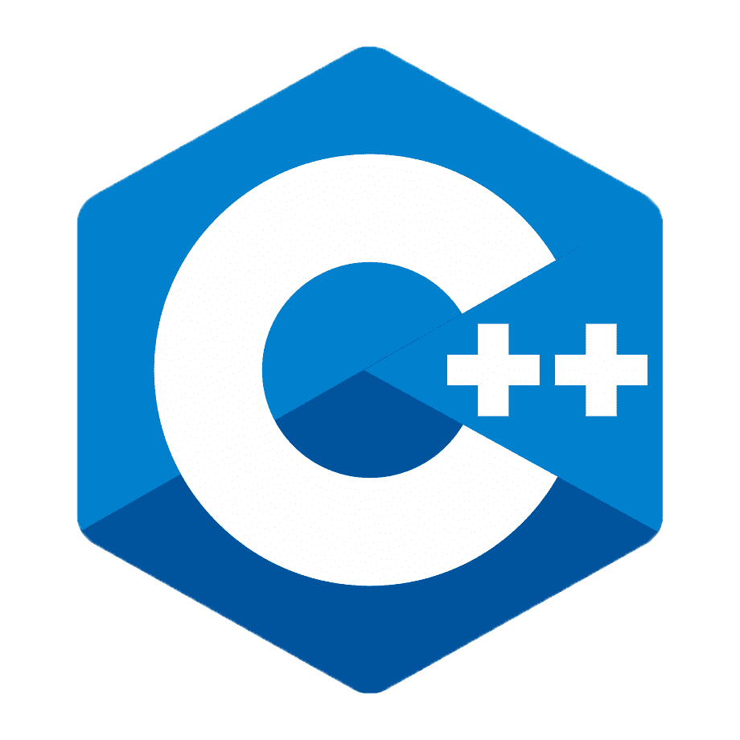
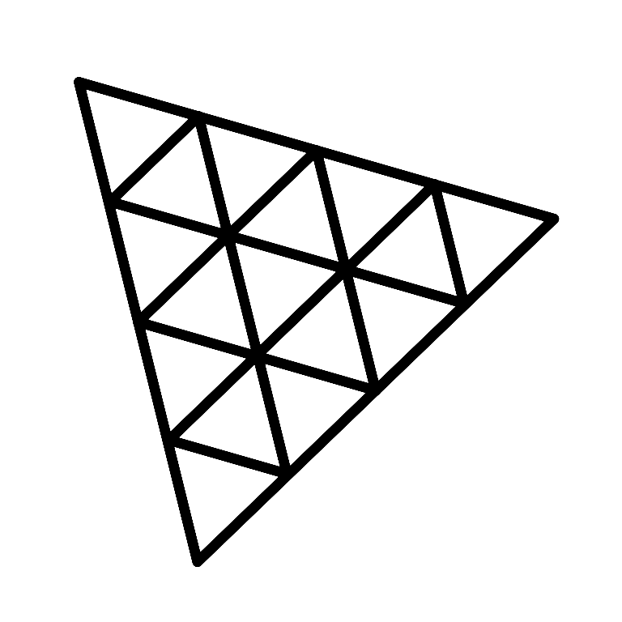

About Me
I am a freelance web developer, that have worked on a lot of projects for students and small businesses. I have been programming since 2020, learning C++ as my first language. Eventually moving to HTML, CSS, and JavaScript.
Programming Languages

When I was in eighth school, C++ became my first language for learning how to program. My initial step into programming was with C++, which I practiced with till I created my first calculator application. I've finished a few little, personal C++ projects, such as a copy-paste font switcher, but they were lost when I purchased a new laptop because I wasn't aware of github at the time.
Skill:

My initial website was hosted on w3schools, where I also studied html throughout my first year. For the video game Axie Infinity, I created an energy counter as one of my own projects. As a freelancer, I have also created a few small-scale websites for businesses and students.
Skill:

I learned CSS pretty late because I was more interested in the backend side of web development. As I matured in programming, I realized I had to, as CSS is an important part of web development. I would also have to learn CSS to start freelancing
Skill:
I learned javascript the same time I learned html. Learning about javascript invoked ideas in me as to what i can do with all the components of javascript, The same invokation i had when i was learning c++. after learning about the things i can do with javascript i started working day and night making the ideas come true the first one is a discord bot that reminds me and my classmates of the schedule.
Skill:

When I was satisfied with my progress in javascript, I sought more things I could learn about it, and that's when I stumbled upon jquery. Jquery is a very popular framework for javascript which improves the usability of the language.
Skill:

I learned three.js in school as part of our lesson in game development. It didn't hit me the same way as C++ and javascript did; it didn't excite me as much. Perhaps it was how I felt like I was not learning something new, but I still tried my best to learn it. I used my experience from the internship I received from epic games as an advantage over my classmates. While they were manually looking for the coordinates of each object, I used Unity.
Skill:

When I learned about bootstrap from a friend who took a web development boot camp, I was surprised as it was the solution to the problems I had with my first website. I quickly read through the documentation and implemented it on my website.
Skill:
Projects
Discord bot using JavaScript
I have made a discord bot using JavaScript for my class. Discord bots help users automate tasks like welcoming a new commer to the server, or remind students about class like what i did. I made a discord bot that reminds me and my classmates if a class is starting. I also programmed it to check and stor the class attendance to make it easier for our class secretary and teachers.
de_Dust2 A Site Recreation using Three.js
de_Dust2 A Site is one of, if not, the most iconic places in the whole gaming world. It is where old school gamers, like myself, was trained. de_Dust2 is a map from a game called Counter-Strike, and the popularity was due to the fairness and simplicity of the map. As a gamer that started in the same game and the same map, I chose to recreate this map to reminisce and to challenge myself.